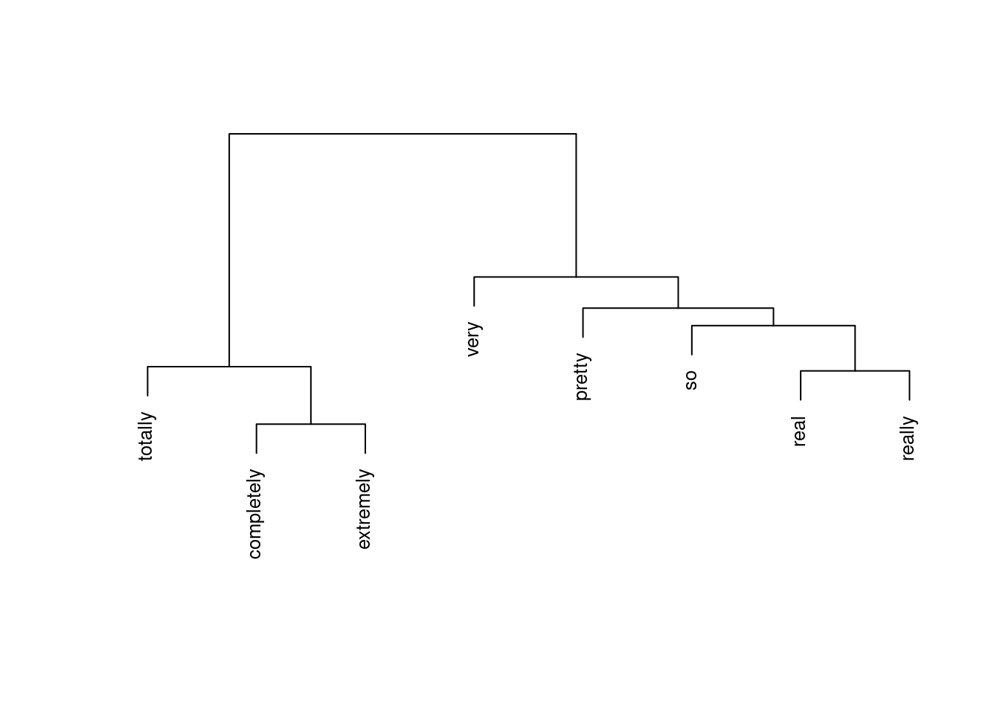

Lexicography with R
Introduction
This tutorial introduces lexicography with R and shows how to use R to create dictionaries and find synonyms through determining semantic similarity in R. While the initial example focuses on English, subsequent sections show how easily this approach can be generalized to languages other than English (e.g. German, French, Spanish, Italian, or Dutch). The entire R-markdown document for the sections below can be downloaded here.
Traditionally, dictionaries are listing of words that are commonly arranged alphabetically, which may include information on definitions, usage, etymologies, pronunciations, translation, etc. [see 1, 2]. If such dictionaries, that are typically published as books contain translations of words in other languages, they are referred to as lexicons. Therefore, lexicographical references show the inter-relationships among lexical data, i.e. words.
Similarly, in computational linguistics, dictionaries represent a specific format of data where elements are linked to or paired with other elements in a systematic way. Computational lexicology refers to a branch of computational linguistics, which is concerned with the use of computers in the study of lexicons. Hence, computational lexicology has been defined as the use of computers in the study of machine-readable dictionaries [see e.g. 3]. Computational lexicology is distinguished from computational lexicography, which can be defined as the use of computers in the construction of dictionaries which is the focus of this tutorial. It should be noted, thought, that computational lexicology and computational lexicography are often used synonymously.
Preparation and session set up
This tutorial is based on R. If you have not installed R or are new to it, you will find an introduction to and more information how to use R here. For this tutorials, we need to install certain packages from an R library so that the scripts shown below are executed without errors. Before turning to the code below, please install the packages by running the code below this paragraph. If you have already installed the packages mentioned below, then you can skip ahead and ignore this section. To install the necessary packages, simply run the following code - it may take some time (between 1 and 5 minutes to install all of the packages so you do not need to worry if it takes some time).
# set options
options(stringsAsFactors = F) # no automatic data transformation
options("scipen" = 100, "digits" = 4) # suppress math annotation
# install packages
install.packages("dplyr")
install.packages("stringr")
install.packages("udpipe")
install.packages("tidytext")
install.packages("coop")
install.packages("cluster")
install.packages("flextable")
install.packages("textdata")
# install klippy for copy-to-clipboard button in code chunks
install.packages("remotes")
remotes::install_github("rlesur/klippy")In a next step, we load the packages.
# load packages
library(dplyr)
library(stringr)
library(udpipe)
library(tidytext)
library(coop)
library(cluster)
library(flextable)
# activate klippy for copy-to-clipboard button
klippy::klippy()Once you have installed R and RStudio and once you have initiated the session by executing the code shown above, you are good to go.
1 Creating dictionaries
In a first step, we load a text. In this case, we load George Orwell’s Nineteen Eighty-Four.
text <- readLines("https://slcladal.github.io/data/orwell.txt") %>%
paste0(collapse = " ")
# show the first 500 characters of the text
substr(text, start=1, stop=500)[1] "1984 George Orwell Part 1, Chapter 1 It was a bright cold day in April, and the clocks were striking thirteen. Winston Smith, his chin nuzzled into his breast in an effort to escape the vile wind, slipped quickly through the glass doors of Victory Mansions, though not quickly enough to prevent a swirl of gritty dust from entering along with him. The hallway smelt of boiled cabbage and old rag mats. At one end of it a coloured poster, too large for indoor display, had been tacked to the wall. It "Next, we download a udpipe language model. In this case, we download a udpipe language model for English, but you can download udpipe language models for more than 60 languages.
# download language model
m_eng <- udpipe::udpipe_download_model(language = "english-ewt")In my case, I have stored this model in a folder called udpipemodels and you can load it (if you have also save the model in a folder called udpipemodels within your Rproj folder as shown below. )
# load language model from your computer after you have downloaded it once
m_eng <- udpipe_load_model(file = here::here("udpipemodels", "english-ewt-ud-2.5-191206.udpipe"))In a next step, we implement the part-of-speech tagger.
# tokenise, tag, dependency parsing
text_ann <- udpipe::udpipe_annotate(m_eng, x = text) %>%
# convert into a data frame
as.data.frame() %>%
# remove columns we do not need
dplyr::select(-sentence, -paragraph_id, -sentence_id, -feats,
-head_token_id, -dep_rel, -deps, -misc)
# inspect
head(text_ann, 10) doc_id token_id token lemma upos xpos
1 doc1 1 1984 1984 PROPN NNP
2 doc1 2 George George PROPN NNP
3 doc1 3 Orwell Orwell PROPN NNP
4 doc1 4 Part part PROPN NNP
5 doc1 5 1 1 NUM CD
6 doc1 6 , , PUNCT ,
7 doc1 7 Chapter chapter PROPN NNP
8 doc1 8 1 1 NUM CD
9 doc1 1 It it PRON PRP
10 doc1 2 was be AUX VBDWe can now use the resulting table to generate a first, basic dictionary that holds information about the word form (token), the part-of speech tag (upos), the lemmatized word type (lemma), and the frequency with which the word form is used as that part-of speech.
# generate dictionary
text_dict_raw <- text_ann %>%
# remove non-words
dplyr::filter(!stringr::str_detect(token, "\\W")) %>%
# filter out numbers
dplyr::filter(!stringr::str_detect(token, "[0-9]")) %>%
# group data
dplyr::group_by(token, lemma, upos) %>%
# summarize data
dplyr::summarise(frequency = dplyr::n()) %>%
# arrange by frequency
dplyr::arrange(-frequency)
# inspect
head(text_dict_raw, 10)# A tibble: 10 × 4
# Groups: token, lemma [10]
token lemma upos frequency
<chr> <chr> <chr> <int>
1 the the DET 5249
2 of of ADP 2908
3 a a DET 2277
4 and and CCONJ 2064
5 was be AUX 1795
6 in in ADP 1446
7 to to PART 1336
8 it it PRON 1295
9 he he PRON 1270
10 had have AUX 1018The above display is ordered by frequency but it is, of course more common, to arrange dictionaries alphabetically. To do this, we can simply use the àrrange function from the dplyr package as shown below.
# generate dictionary
text_dict <- text_dict_raw %>%
# arrange alphabetically
dplyr::arrange(token)
# inspect
head(text_dict, 10)# A tibble: 10 × 4
# Groups: token, lemma [7]
token lemma upos frequency
<chr> <chr> <chr> <int>
1 a a DET 2277
2 A a DET 107
3 A a NOUN 1
4 Aaronson Aaronson PROPN 8
5 aback aback ADV 1
6 aback aback NOUN 1
7 abandon abandon VERB 2
8 abandon abandon ADP 1
9 abandoned abandon VERB 4
10 abasement abasement NOUN 1We have now generated a basic dictionary of English but, as you can see above, there are still some errors as the part-of-speech tagging was not perfect. As such, you will still need to check and edit the results manually but you have already a rather clean dictionary based on George Orwell’s Nineteen Eighty-Four to work with.
Correcting and Extending Dictionaries
Fortunately, it is very easy in R to correct entries, i.e., changing lemmas or part-of-speech tags, and to extend entries, i.e., adding additional layers of information such as urls or examples.
We will begin to extend our dictionary by adding an additional column (called annotation) in which we will add information.
# generate dictionary
text_dict_ext <- text_dict %>%
# removing an entry
dplyr::filter(!(lemma == "a" & upos == "NOUN")) %>%
# editing entries
dplyr::mutate(upos = ifelse(lemma == "aback" & upos == "NOUN", "PREP", upos)) %>%
# adding comments
dplyr::mutate(comment = dplyr::case_when(lemma == "a" ~ "also an before vowels",
lemma == "Aaronson" ~ "Name of someone.",
T ~ ""))
# inspect
head(text_dict_ext, 10)# A tibble: 10 × 5
# Groups: token, lemma [8]
token lemma upos frequency comment
<chr> <chr> <chr> <int> <chr>
1 a a DET 2277 "also an before vowels"
2 A a DET 107 "also an before vowels"
3 Aaronson Aaronson PROPN 8 "Name of someone."
4 aback aback ADV 1 ""
5 aback aback PREP 1 ""
6 abandon abandon VERB 2 ""
7 abandon abandon ADP 1 ""
8 abandoned abandon VERB 4 ""
9 abasement abasement NOUN 1 ""
10 abashed abashed VERB 1 "" To make it a bit more interesting but also keep this tutorial simple and straight-forward, we will add information about the polarity and emotionally of the words in our dictionary. We can do this by performing a sentiment analysis on the lemmas using the tidytext package.
The tidytext package contains three sentiment dictionaries (nrc, bing, and afinn). For the present purpose, we use the ncrdictionary which represents the Word-Emotion Association Lexicon [4]. The Word-Emotion Association Lexicon which comprises 10,170 terms, and in which lexical elements are assigned scores based on ratings gathered through the crowd-sourced Amazon Mechanical Turk service. For the Word-Emotion Association Lexicon raters were asked whether a given word was associated with one of eight emotions. The resulting associations between terms and emotions are based on 38,726 ratings from 2,216 raters who answered a sequence of questions for each word which were then fed into the emotion association rating [cf. 4]. Each term was rated 5 times. For 85 percent of words, at least 4 raters provided identical ratings. For instance, the word cry or tragedy are more readily associated with SADNESS while words such as happy or beautiful are indicative of JOY and words like fit or burst may indicate ANGER. This means that the sentiment analysis here allows us to investigate the expression of certain core emotions rather than merely classifying statements along the lines of a crude positive-negative distinction.
To be able to use the Word-Emotion Association Lexicon we need to add another column to our data frame called word which simply contains the lemmatized word. The reason is that the lexicon expects this column and only works if it finds a word column in the data. The code below shows how to add the emotion and polarity entries to our dictionary.
# generate dictionary
text_dict_snt <- text_dict_ext %>%
dplyr::mutate(word = lemma) %>%
dplyr::left_join(get_sentiments("nrc")) %>%
dplyr::group_by(token, lemma, upos, comment) %>%
dplyr::summarise(sentiment = paste0(sentiment, collapse = ", "))
# inspect
head(text_dict_snt, 10) # A tibble: 10 × 5
# Groups: token, lemma, upos [10]
token lemma upos comment sentiment
<chr> <chr> <chr> <chr> <chr>
1 a a DET "also an before vowels" NA
2 A a DET "also an before vowels" NA
3 Aaronson Aaronson PROPN "Name of someone." NA
4 aback aback ADV "" NA
5 aback aback PREP "" NA
6 abandon abandon ADP "" fear, negative, sadness
7 abandon abandon VERB "" fear, negative, sadness
8 abandoned abandon VERB "" fear, negative, sadness
9 abasement abasement NOUN "" NA
10 abashed abashed VERB "" NA The resulting extended dictionary now contains not only the token, the lemma, and the pos-tag but also the sentiment from the Word-Emotion Association Lexicon.
Generating dictionaries for other languages
As mentioned above, the procedure for generating dictionaries can easily be applied to languages other than English. If you want to follow exactly the procedure described above, then the language set of the TreeTagger is the limiting factors as its R implementation only supports English, German, French, Italian, Spanish, and Dutch. fa part-of-speech tagged text in another language is already available to you, and you do not require the TreeTagger for the part-of-speech tagging, then you can skip the code chunk that is related to the tagging and you can modify the procedure described above to virtually any language.
We will now briefly create a German dictionary based on a subsection of the fairy tales collected by the brothers Grimm to show how the above procedure can be applied to a language other than English. In a first step, we load a German text into R.
grimm <- readLines("https://slcladal.github.io/data/GrimmsFairytales.txt",
encoding = "latin1") %>%
paste0(collapse = " ")
# show the first 500 characters of the text
substr(grimm, start=1, stop=200)[1] "Der Froschkönig oder der eiserne Heinrich Ein Märchen der Brüder Grimm Brüder Grimm In den alten Zeiten, wo das Wünschen noch geholfen hat, lebte ein König, dessen Töchter waren alle schön; aber die"Next, we download a udpipe language model. In this case, we download a udpipe language model for German, but you can download udpipe language models for more than 60 languages.
# download language model
udpipe::udpipe_download_model(language = "german-hdt")In my case, I have stored this model in a folder called udpipemodels and you can load it (if you have also save the model in a folder called udpipemodels within your Rproj folder as shown below).
# load language model from your computer after you have downloaded it once
m_ger <- udpipe_load_model(file = here::here("udpipemodels",
#"german-hdt-ud-2.5-191206.udpipe"))
"german-gsd-ud-2.5-191206.udpipe"))In a next step, we generating the dictionary based on the brothers’ Grimm fairy tales. We go through the same steps as for the English dictionary and collapse all the steps into a single code block.
# tokenise, tag, dependency parsing
grimm_ann <- udpipe::udpipe_annotate(m_ger, x = grimm) %>%
# convert into a data frame
as.data.frame() %>%
# remove non-words
dplyr::filter(!stringr::str_detect(token, "\\W")) %>%
# filter out numbers
dplyr::filter(!stringr::str_detect(token, "[0-9]")) %>%
dplyr::group_by(token, lemma, upos) %>%
dplyr::summarise(frequency = dplyr::n()) %>%
dplyr::arrange(lemma)
# inspect
head(grimm_ann, 10)# A tibble: 10 × 4
# Groups: token, lemma [8]
token lemma upos frequency
<chr> <chr> <chr> <int>
1 A A NOUN 1
2 ab ab ADP 12
3 abends abend ADV 2
4 Abend Abend NOUN 3
5 abends abends ADV 1
6 aber aber ADJ 1
7 aber aber ADV 56
8 aber aber CCONJ 32
9 Aber aber CCONJ 16
10 abfallen abfallen VERB 1As with the English dictionary, we have created a customized German dictionary based of a subsample of the brothers’ Grimm fairy tales holding the word form(token), the part-of-speech tag (tag), the lemmatized word type (lemma), the general word class (wclass), ad the frequency with which a word form occurs as a part-of-speech in the data (frequency).
2 Finding synonyms: creating a thesaurus
Another task that is quite common in lexicography is to determine if words share some form of relationship such as whether they are synonyms or antonyms. In computational linguistics, this is commonly determined based on the collocational profiles of words. These collocational profiles are also called word vectors or word embeddings and approaches which determine semantic similarity based on collocational profiles or word embeddings are called distributional approaches (or distributional semantics). The basic assumption of distributional approaches is that words that occur in the same context and therefore have similar collocational profiles are also semantically similar. In fact, various packages, such as qdap or , wordnet already provide synonyms for terms (all of which are based on similar collocational profiles) but we would like to determine if words are similar without knowing it in advance.
In this example, we want to determine if two degree adverbs (such as very, really, so, completely, totally, amazingly, etc.) are synonymous and can therefore be exchanged without changing the meaning of the sentence (or, at least, not changing it dramatically). This is relevant in lexicography as such terms can then be linked to each other and inform readers that these words are interchangeable.
As a first step, we load the data which contains three columns:
one column holding the degree adverbs which is called pint
one column called adjs holding the adjectives that the degree adverbs have modified
one column called remove which contains the word keep and which we will remove as it is not relevant for this tutorial
When loading the data, we
remove the remove column
rename the pint column as degree_adverb
rename the adjs column as adjectives
filter out all instances where the degree adverb column has the value
0(which means that the adjective was not modified)remove instances where well functions as a degree adverb (because it behaves rather differently from other degree adverbs)
# load data
degree_adverbs <- base::readRDS(url("https://slcladal.github.io/data/dad.rda", "rb")) %>%
dplyr::select(-remove) %>%
dplyr::rename(degree_adverb = pint,
adjective = adjs) %>%
dplyr::filter(degree_adverb != "0",
degree_adverb != "well")
# inspect
head(degree_adverbs, 10) degree_adverb adjective
1 real bad
2 really nice
3 very good
4 really early
5 really bad
6 really bad
7 so long
8 really wonderful
9 pretty good
10 really easyIn a next step, we create a matrix from this data frame which maps how often a given amplifier co-occurred with a given adjective. In text mining, this format is called a text-document matrix or tdm (which is a transposed document-term matrix of dtm).
# tabulate data (create term-document matrix)
tdm <- ftable(degree_adverbs$adjective, degree_adverbs$degree_adverb)
# extract amplifiers and adjectives
amplifiers <- as.vector(unlist(attr(tdm, "col.vars")[1]))
adjectives <- as.vector(unlist(attr(tdm, "row.vars")[1]))
# attach row and column names to tdm
rownames(tdm) <- adjectives
colnames(tdm) <- amplifiers
# inspect data
tdm[1:5, 1:5] completely extremely pretty real really
able 0 1 0 0 0
actual 0 0 0 1 0
amazing 0 0 0 0 4
available 0 0 0 0 1
bad 0 0 1 2 3In a next step, we extract the expected values of the co-occurrences if the amplifiers were distributed homogeneously and calculate the Pointwise Mutual Information (PMI) score and use that to then calculate the Positive Pointwise Mutual Information (PPMI) scores. According to [5] 327 - referring to [6] - PPMI perform better than PMI as negative values are replaced with zeros. In a next step, we calculate the cosine similarity which will for the bases for the subsequent clustering.
# compute expected values
tdm.exp <- chisq.test(tdm)$expected
# calculate PMI and PPMI
PMI <- log2(tdm/tdm.exp)
PPMI <- ifelse(PMI < 0, 0, PMI)
# calculate cosine similarity
cosinesimilarity <- cosine(PPMI)
# inspect cosine values
cosinesimilarity[1:5, 1:5] completely extremely pretty real really
completely 1.00000000 0.204188725 0.000000000 0.05304354 0.126668434
extremely 0.20418873 1.000000000 0.007319316 0.00000000 0.004235346
pretty 0.00000000 0.007319316 1.000000000 0.09441299 0.062323271
real 0.05304354 0.000000000 0.094412995 1.00000000 0.131957473
really 0.12666843 0.004235346 0.062323271 0.13195747 1.000000000As we have now obtained a similarity measure, we can go ahead and perform a cluster analysis on these similarity values. However, as we have to extract the maximum values in the similarity matrix that is not 1 as we will use this to create a distance matrix. While we could also have simply subtracted the cosine similarity values from 1 to convert the similarity matrix into a distance matrix, we follow the procedure proposed by [5].
# find max value that is not 1
cosinesimilarity.test <- apply(cosinesimilarity, 1, function(x){
x <- ifelse(x == 1, 0, x) } )
maxval <- max(cosinesimilarity.test)
# create distance matrix
amplifier.dist <- 1 - (cosinesimilarity/maxval)
clustd <- as.dist(amplifier.dist)In a next step, we visualize the results of the semantic vector space model as a dendrogram.
# create cluster object
cd <- hclust(clustd, method="ward.D")
# plot cluster object
plot(cd, main = "", sub = "", yaxt = "n", ylab = "", xlab = "", cex = .8)
The clustering solution shows that, as expected, completely, extremely, and totally - while similar to each other and thus interchangeable with each other - form a separate cluster from all other amplifiers. In addition, real and really form a cluster together. The clustering of very, pretty, so, really, and real suggest that these amplifiers are more or less interchangeable with each other but not with totally, completely, and extremely.
To extract synonyms automatically, we can use the cosine similarity matrix that a´we generated before. This is what we need to do:
- generate a column called word
- replace the perfect similarity values of the diagonal with 0
- look up the lowest value, i.e. the word that has the lowest distance to a given word
- create a vector which holds those words (the synonym candidates).
syntb <- cosinesimilarity %>%
as.data.frame() %>%
dplyr::mutate(word = colnames(cosinesimilarity)) %>%
dplyr::mutate_each(funs(replace(., . == 1, 0))) %>%
dplyr::mutate(synonym = colnames(.)[apply(.,1,which.max)]) %>%
dplyr::select(word, synonym)
syntb word synonym
completely completely extremely
extremely extremely completely
pretty pretty real
real real really
really really real
so so real
totally totally completely
very very so
NOTE
Remember that this is only a tutorial! A proper study would have to take the syntactic context into account because, while we can say This really great tutorial helped me a lot. we probably would not say This so great tutorial helped me a lot. This is because so syntactically more restricted and is strongly disfavored in attributive contexts. Therefore, the syntactic context would have to be considered in a more thorough study.
`
`
There are many more useful methods for identifying semantic similarity. A very useful method (which we have implemented here but only superficially is Semantic Vector Space Modeling. If you want to know more about this, this tutorial by Gede Primahadi Wijaya Rajeg, Karlina Denistia, and Simon Musgrave [7] is highly recommended and will give a better understanding of SVM but this should suffice to get you started.
3 Creating bilingual dictionaries
Dictionaries commonly contain information about elements. Bilingual or translation dictionaries represent a sub-category of dictionaries that provide a specific type of information about a given word: the translation of that word in another language. In principle, generating translation dictionaries is relatively easy and straight forward. However, not only is the devil hidden in the details but the generation of data-driven translation dictionaries also require a substantial data set consisting of sentences and their translation. This is often quite tricky as well aligned translations are unfortunately, and unexpectedly, rather hard to come by.
Despite these issues, if you have access to clean and well aligned, parallel multilingual data, then you simply need to check which correlation between the word in language A and language B is the highest and you have a likely candidate for its translation. The same procedure can be extended to generate multilingual dictionaries. Problems arise due to grammatical differences between languages, idiomatic expressions, homonymy and polysemy as well as due to word class issues. The latter, word class issues, can be solved by part-of-speech tagging and then only considering words that belong to the same (or realistically similar) parts-of speech. The other issues can also be solved but require substantial amounts of (annotated) data.
To explore how to generate a multilingual lexicon, we load a sample of English sentences and their German translations.
# load translations
translations <- readLines("https://slcladal.github.io/data/translation.txt",
encoding = "UTF-8", skipNul = T). |
Guten Tag! — Good day! |
Guten Morgen! — Good morning! |
Guten Abend! — Good evening! |
Hallo! — Hello! |
Wo kommst du her? — Where are you from? |
Woher kommen Sie? — Where are you from? |
Ich bin aus Hamburg. — I am from Hamburg. |
Ich komme aus Hamburg. — I come from Hamburg. |
Ich bin Deutscher. — I am German. |
Schön Sie zu treffen. — Pleasure to meet you! |
Wie lange lebst du schon in Brisbane? — How long have you been living in Brisbane? |
Leben Sie schon lange hier? — Have you been living here for long? |
Welcher Bus geht nach Brisbane? — Which bus goes to Brisbane? |
Von welchem Gleis aus fährt der Zug? — Which platform is the train leaving from? |
Ist dies der Bus nach Toowong? — Is this the bus going to Toowong? |
In a next step, we generate separate tables which hold the German and English sentences. However, the sentences and their translations are identified by an identification number (id) so that we keep the information about which sentence is linked to which translation.
# german sentences
german <- str_remove_all(translations, " — .*") %>%
str_remove_all(., "[:punct:]")
# english sentences
english <- str_remove_all(translations, ".* — ") %>%
str_remove_all(., "[:punct:]")
# sentence id
sentence <- 1:length(german)
# combine into table
germantb <- data.frame(sentence, german)
# sentence id
sentence <- 1:length(english)
# combine into table
englishtb <- data.frame(sentence, english)sentence | german |
1 | Guten Tag |
2 | Guten Morgen |
3 | Guten Abend |
4 | Hallo |
5 | Wo kommst du her |
6 | Woher kommen Sie |
7 | Ich bin aus Hamburg |
8 | Ich komme aus Hamburg |
9 | Ich bin Deutscher |
10 | Schön Sie zu treffen |
11 | Wie lange lebst du schon in Brisbane |
12 | Leben Sie schon lange hier |
13 | Welcher Bus geht nach Brisbane |
14 | Von welchem Gleis aus fährt der Zug |
15 | Ist dies der Bus nach Toowong |
We now unnest the tokens (split the sentences into words) and subsequently add the translations which we again unnest. The resulting table consists of two columns holding German and English words. The relevant point here is that each German word is linked with each English word that occurs in the translated sentence.
library(plyr)
# tokenize by sentence: german
transtb <- germantb %>%
unnest_tokens(word, german) %>%
# add english data
plyr::join(., englishtb, by = "sentence") %>%
unnest_tokens(trans, english) %>%
dplyr::rename(german = word,
english = trans) %>%
dplyr::select(german, english) %>%
dplyr::mutate(german = factor(german),
english = factor(english))german | english |
guten | good |
guten | day |
tag | good |
tag | day |
guten | good |
guten | morning |
morgen | good |
morgen | morning |
guten | good |
guten | evening |
abend | good |
abend | evening |
hallo | hello |
wo | where |
wo | are |
Based on this table, we can now generate a term-document matrix which shows how frequently each word co-occurred in the translation of any of the sentences. For instance, the German word alles occurred one time in a translation of a sentence which contained the English word all.
# tabulate data (create term-document matrix)
tdm <- ftable(transtb$german, transtb$english)
# extract amplifiers and adjectives
german <- as.vector(unlist(attr(tdm, "col.vars")[1]))
english <- as.vector(unlist(attr(tdm, "row.vars")[1]))
# attach row and column names to tdm
rownames(tdm) <- english
colnames(tdm) <- german
# inspect data
tdm[1:10, 1:10] a accident all am ambulance an and any anything are
ab 0 0 0 0 0 0 0 0 0 0
abend 0 0 0 0 0 0 0 0 0 0
allem 0 0 0 0 0 0 0 0 0 0
alles 0 0 1 0 0 0 0 0 0 0
am 0 0 0 0 0 0 0 0 0 0
an 0 0 0 0 0 0 0 0 0 0
anderen 1 0 0 0 0 0 0 0 0 0
apotheke 1 0 0 1 0 0 0 0 0 0
arzt 1 0 0 0 0 0 0 0 0 0
auch 3 0 0 0 0 0 0 0 1 0Now, we reformat this co-occurrence matrix so that we have the frequency information that is necessary for setting up 2x2 contingency tables which we will use to calculate the co-occurrence strength between each word and its potential translation.
coocdf <- as.data.frame(as.matrix(tdm))
cooctb <- coocdf %>%
dplyr::mutate(German = rownames(coocdf)) %>%
tidyr::gather(English, TermCoocFreq,
colnames(coocdf)[1]:colnames(coocdf)[ncol(coocdf)]) %>%
dplyr::mutate(German = factor(German),
English = factor(English)) %>%
dplyr::mutate(AllFreq = sum(TermCoocFreq)) %>%
dplyr::group_by(German) %>%
dplyr::mutate(TermFreq = sum(TermCoocFreq)) %>%
dplyr::ungroup(German) %>%
dplyr::group_by(English) %>%
dplyr::mutate(CoocFreq = sum(TermCoocFreq)) %>%
dplyr::arrange(German) %>%
dplyr::mutate(a = TermCoocFreq,
b = TermFreq - a,
c = CoocFreq - a,
d = AllFreq - (a + b + c)) %>%
dplyr::mutate(NRows = nrow(coocdf))%>%
dplyr::filter(TermCoocFreq > 0)German | English | TermCoocFreq | AllFreq | TermFreq | CoocFreq | a | b | c | d | NRows |
ab | departing | 1 | 3,504 | 5 | 5 | 1 | 4 | 4 | 3,495 | 215 |
ab | is | 1 | 3,504 | 5 | 116 | 1 | 4 | 115 | 3,384 | 215 |
ab | the | 1 | 3,504 | 5 | 125 | 1 | 4 | 124 | 3,375 | 215 |
ab | train | 1 | 3,504 | 5 | 16 | 1 | 4 | 15 | 3,484 | 215 |
ab | when | 1 | 3,504 | 5 | 27 | 1 | 4 | 26 | 3,473 | 215 |
abend | evening | 1 | 3,504 | 2 | 2 | 1 | 1 | 1 | 3,501 | 215 |
abend | good | 1 | 3,504 | 2 | 16 | 1 | 1 | 15 | 3,487 | 215 |
allem | döner | 1 | 3,504 | 5 | 10 | 1 | 4 | 9 | 3,490 | 215 |
allem | everything | 1 | 3,504 | 5 | 5 | 1 | 4 | 4 | 3,495 | 215 |
allem | one | 1 | 3,504 | 5 | 30 | 1 | 4 | 29 | 3,470 | 215 |
allem | please | 1 | 3,504 | 5 | 111 | 1 | 4 | 110 | 3,389 | 215 |
allem | with | 1 | 3,504 | 5 | 22 | 1 | 4 | 21 | 3,478 | 215 |
alles | all | 1 | 3,504 | 6 | 5 | 1 | 5 | 4 | 3,494 | 215 |
alles | for | 1 | 3,504 | 6 | 93 | 1 | 5 | 92 | 3,406 | 215 |
alles | no | 1 | 3,504 | 6 | 7 | 1 | 5 | 6 | 3,492 | 215 |
In a final step, we extract those potential translations that correlate most strongly with each given term. The results then form a list of words and their most likely translation.
translationtb <- cooctb %>%
dplyr::rowwise() %>%
dplyr::mutate(p = round(as.vector(unlist(fisher.test(matrix(c(a, b, c, d), ncol = 2, byrow = T))[1])), 5),
x2 = round(as.vector(unlist(chisq.test(matrix(c(a, b, c, d), ncol = 2, byrow = T))[1])), 3)) %>%
dplyr::mutate(phi = round(sqrt((x2/(a + b + c + d))), 3),
expected = as.vector(unlist(chisq.test(matrix(c(a, b, c, d), ncol = 2, byrow = T))$expected[1]))) %>%
dplyr::filter(TermCoocFreq > expected) %>%
dplyr::arrange(-phi) %>%
dplyr::select(-AllFreq, -a, -b, -c, -d, -NRows, -expected)German | English | TermCoocFreq | TermFreq | CoocFreq | p | x2 | phi |
hallo | hello | 1 | 1 | 1 | 0.00029 | 875.500 | 0.500 |
abend | evening | 1 | 2 | 2 | 0.00114 | 218.250 | 0.250 |
ja | yes | 1 | 2 | 2 | 0.00114 | 218.250 | 0.250 |
morgen | morning | 1 | 2 | 2 | 0.00114 | 218.250 | 0.250 |
tag | day | 1 | 2 | 2 | 0.00114 | 218.250 | 0.250 |
guten | good | 4 | 13 | 16 | 0.00000 | 201.086 | 0.240 |
brauche | need | 5 | 20 | 27 | 0.00000 | 124.215 | 0.188 |
nein | no | 2 | 9 | 7 | 0.00012 | 122.721 | 0.187 |
bier | beer | 2 | 8 | 8 | 0.00013 | 120.757 | 0.186 |
hamburg | hamburg | 2 | 8 | 8 | 0.00013 | 120.757 | 0.186 |
braucht | he | 1 | 3 | 3 | 0.00257 | 96.501 | 0.166 |
braucht | medication | 1 | 3 | 3 | 0.00257 | 96.501 | 0.166 |
braucht | needs | 1 | 3 | 3 | 0.00257 | 96.501 | 0.166 |
deutscher | german | 1 | 3 | 3 | 0.00257 | 96.501 | 0.166 |
er | he | 1 | 3 | 3 | 0.00257 | 96.501 | 0.166 |
The results show that even using the very limited data base can produce some very reasonable results. In fact, based on the data that we used here, the first translations appear to be very sensible, but the mismatches also show that more data is required to disambiguate potential translations.
While this method still requires manual correction, it is a very handy and useful tool for generating custom bilingual dictionaries that can be extended to any set of languages as long as these languages can be represented as distinct words and as long as parallel data is available.
4 Going further: crowd-sourced dictionaries with R and Git
While it would go beyond the scope of this tutorial, it should be noted that the approach for creating dictionaries can be applied to crowed-sourced dictionaries. To do this, you could, e.g. upload your dictionary to a Git repository such as GitHub or GitLab which would then allow everybody with an account on either of these platforms to add content to the dictionary.

To add to the dictionary, contributors would simply have to fork the repository of the dictionary and then merge with the existing, original dictionary repository. The quality of the data would meanwhile remain under control of the owner of the original repository he they can decide on a case-by-case basis which change they would like to accept. In addition, and because Git is a version control environment, the owner could also go back to previous versions, if they think they erroneously accepted a change (merge).
This option is particularly interesting for the approach to creating dictionaries presented here because R Studio has an integrated and very easy to use pipeline to Git (see, e.g., here and here)
We have reached the end of this tutorial and you now know how to create and modify networks in R and how you can highlight aspects of your data.
Citation & Session Info
Schweinberger, Martin. 2022. Lexicography with R. Brisbane: The University of Queensland. url: https://slcladal.github.io/lex.html (Version 2022.08.31).
@manual{schweinberger2022lex,
author = {Schweinberger, Martin},
title = {Lexicography with R},
note = {https://slcladal.github.io/lex.html},
year = {2022},
organization = "The University of Queensland, Australia. School of Languages and Cultures},
address = {Brisbane},
edition = {2022.08.31}
}sessionInfo()R version 4.2.1 (2022-06-23)
Platform: x86_64-pc-linux-gnu (64-bit)
Running under: Ubuntu 22.04.1 LTS
Matrix products: default
BLAS: /usr/lib/x86_64-linux-gnu/blas/libblas.so.3.10.0
LAPACK: /usr/lib/x86_64-linux-gnu/lapack/liblapack.so.3.10.0
locale:
[1] LC_CTYPE=en_AU.UTF-8 LC_NUMERIC=C
[3] LC_TIME=en_AU.UTF-8 LC_COLLATE=en_AU.UTF-8
[5] LC_MONETARY=en_AU.UTF-8 LC_MESSAGES=en_AU.UTF-8
[7] LC_PAPER=en_AU.UTF-8 LC_NAME=C
[9] LC_ADDRESS=C LC_TELEPHONE=C
[11] LC_MEASUREMENT=en_AU.UTF-8 LC_IDENTIFICATION=C
attached base packages:
[1] stats graphics grDevices utils datasets methods base
other attached packages:
[1] plyr_1.8.7 flextable_0.7.3 cluster_2.1.3 coop_0.6-3
[5] tidytext_0.3.3 udpipe_0.8.9 stringr_1.4.0 dplyr_1.0.9
loaded via a namespace (and not attached):
[1] tidyselect_1.1.2 xfun_0.31 textdata_0.4.2 purrr_0.3.4
[5] lattice_0.20-45 vctrs_0.4.1 generics_0.1.3 htmltools_0.5.2
[9] SnowballC_0.7.0 yaml_2.3.5 base64enc_0.1-3 utf8_1.2.2
[13] rlang_1.0.4 pillar_1.7.0 glue_1.6.2 DBI_1.1.3
[17] rappdirs_0.3.3 gdtools_0.2.4 uuid_1.1-0 lifecycle_1.0.1
[21] zip_2.2.0 htmlwidgets_1.5.4 evaluate_0.15 knitr_1.39
[25] tzdb_0.3.0 fastmap_1.1.0 fansi_1.0.3 tokenizers_0.2.1
[29] Rcpp_1.0.8.3 readr_2.1.2 jsonlite_1.8.0 fs_1.5.2
[33] systemfonts_1.0.4 hms_1.1.1 digest_0.6.29 stringi_1.7.8
[37] grid_4.2.1 rprojroot_2.0.3 here_1.0.1 cli_3.3.0
[41] tools_4.2.1 magrittr_2.0.3 klippy_0.0.0.9500 tibble_3.1.7
[45] janeaustenr_0.1.5 tidyr_1.2.0 crayon_1.5.1 pkgconfig_2.0.3
[49] ellipsis_0.3.2 Matrix_1.4-1 data.table_1.14.2 xml2_1.3.3
[53] assertthat_0.2.1 rmarkdown_2.14 officer_0.4.3 rstudioapi_0.13
[57] R6_2.5.1 compiler_4.2.1 References
References
1.
Agnes, M., Goldman, J.L., Soltis, K.: Webster’s new world compact desk dictionary and style guide. Hungry Minds (2002).
2.
Steiner, R.J.: Dictionaries. The art and craft of lexicography. Dictionaries: Journal of the Dictionary Society of North America. 7, 294–300 (1985).
3.
Amsler, R.A.: The structure of the merriam-webster pocket dictionary. he University of Texas at Austin, Austin, TX (1981).
4.
Mohammad, S.M., Turney, P.D.: Crowdsourcing a word-emotion association lexicon. Computational Intelligence. 29, 436–465 (2013).
5.
Levshina, N.: How to do linguistics with r: Data exploration and statistical analysis. John Benjamins Publishing Company, Amsterdam (2015).
6.
Bullinaria, J.A., Levy, J.P.: Extracting semantic representations from word co-occurrence statistics: A computational study. Behavior Research Methods. 39, 510–526 (2007).
7.
Rajeg, G.P.W., Denistia, K., Musgrave, S.: R markdown notebook for vector space model and the usage patterns of indonesian denominal verbs, https://doi.org10.6084/m9.figshare.9970205. https://figshare.com/articles/R\%5FMarkdown\%5FNotebook\%5Ffor\%5Fi\%5FVector\%5Fspace\%5Fmodel\%5Fand\%5Fthe\%5Fusage\%5Fpatterns\%5Fof\%5FIndonesian\%5Fdenominal\%5Fverbs\%5Fi\%5F/9970205, (2019).